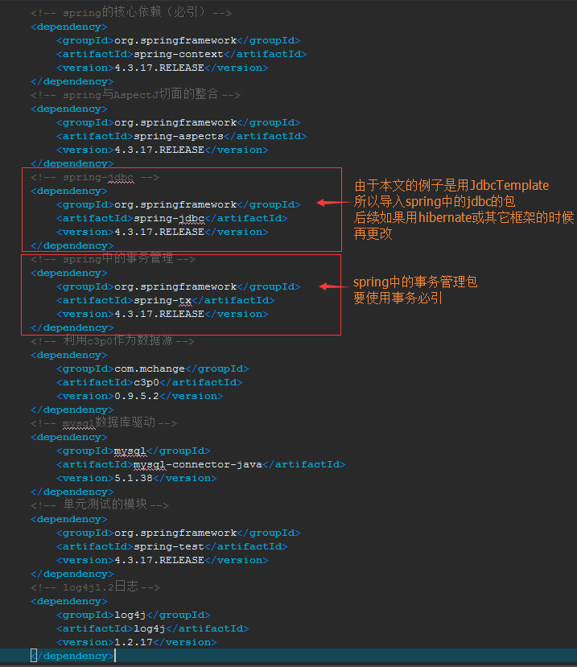
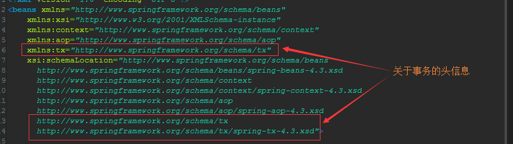
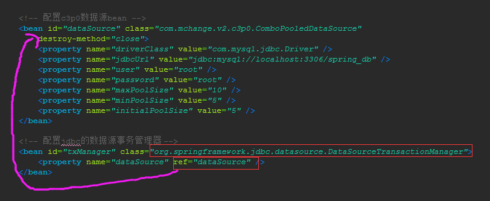
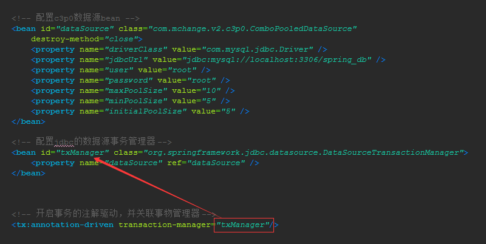
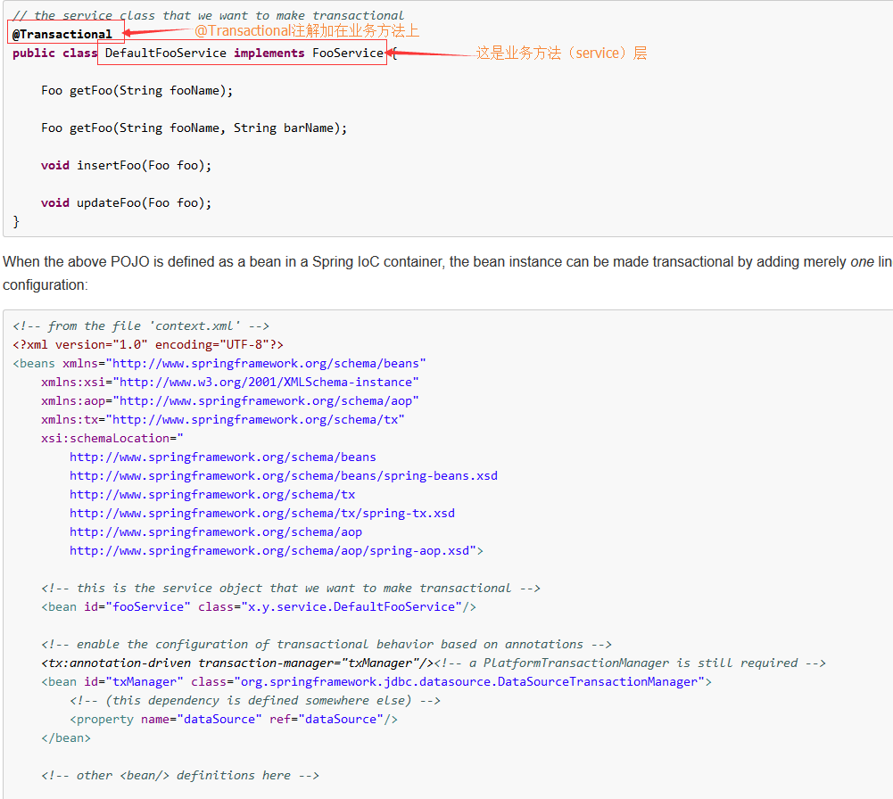
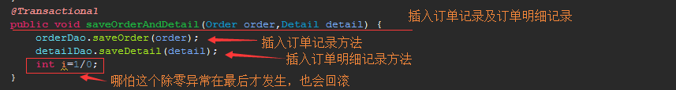
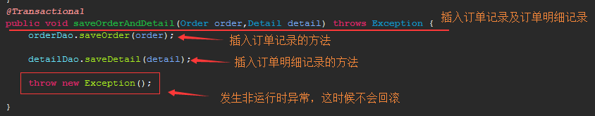

第一步：导包并在ApplicationContext.xml中加入头信息


第二步：配置jdbc的数据源事务管理器（注：这里用JdbcTemplate来示例，如果用hibernate的话会不一样）

第三步：开启事务的注解驱动，并关联事务管理器

第四步：通过@Transactional注解（位于org.springframework.transaction.annotation包下）来标注要使用事务的类或接口或方法，通常标注在业务层（service）的方法上，因为这样可以进行细粒度的事务管理
参考官方文档17.5.6 Using @Transactional

注意点一：异常不管在方法的哪个位置，只要发生异常的话就回滚

注意点二：发生运行时异常会回滚，发生非运行时异常不会回滚
